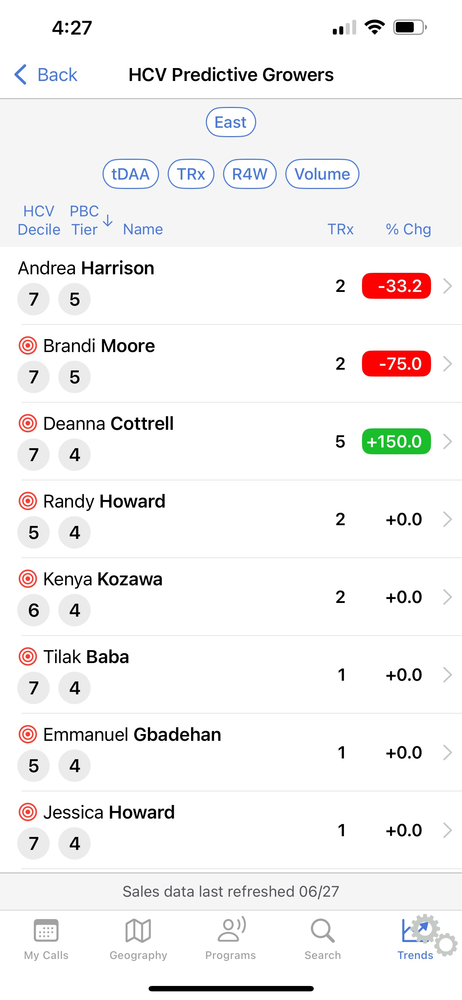

An iPad-native tool for field representatives.
Designing a tablet dashboard for healthcare reps who needed real information, in real time, on the road.
Equip a fleet of healthcare field reps with a purpose-built iPad tool, one designed for the real conditions of on-site work in clinics and hospitals, not a desktop experience crammed onto a tablet.
Lead UX designer. I owned research, information architecture, and end-to-end interaction design for the iPadOS experience, including field ride-alongs to understand how reps actually work.
A tailored dashboard that reps adopted as their primary tool. Core workflows compressed from 6+ taps to 2-3, and field locations with poor signal stopped being a barrier to getting work done.


Before & after
The prior tool was a desktop dashboard crammed onto a tablet. This was built for the tablet, and for the visit itself.


How I approached it
The work hinged on contextual research. We needed to understand the actual moment a rep would use this thing.
Ride-alongs & interviews
Time with reps in the field surfaced the real problems. Too many taps, brittle offline behavior, and info buried where they couldn't reach it quickly.
Information architecture
Restructured the data model around the rep's mental model: by account, by visit, by next action. Instead of just mirroring the back-end schema.
iPadOS-native patterns
Using native interactions like split views, drag-and-drop, and contextual menus, so the tool felt at home on the device. Not like a web app in a frame.
Test with real reps
Prototypes back in front of the same field team. Did tasks that used to take six taps now take two?
Decisions that mattered
Designing for one-handed use, not two
Reps often hold the iPad in one arm while talking to a clinician. Critical actions sit within thumb-reach on the non-dominant side; destructive actions like delete or send sit deliberately further away.
Glanceable over comprehensive
The default dashboard is intentionally sparse: what does this rep need to know in the next 30 seconds? Detail is one tap away. This was the decision we had to defend the most in reviews.
Information architecture built around the rep's mental model
The original data structure mirrored the back-end schema, which made sense to engineers but not to reps. We restructured it around how reps actually think: by account, by visit, by next action. That IA shift was the single biggest driver of the task-completion improvement we saw in testing.
What changed
Specific metrics covered in the full case study Public-facing highlights:
Reduction in taps for core workflows compared to the prior tool. Tasks that used to take 6 or more taps now took 2 to 3, based on usability testing with the same field team.
Reps dropped their old workflow and switched to the new tool as their default. That's the truest signal a field tool is doing its job: people actually use it when it counts.
Reps described it as feeling like "an actual iPad app, not a web page." That credibility mattered in front of clinicians. Pulling out a polished, purposeful tool changes the dynamic of a sales visit.
Field locations with poor or no signal stopped being a source of frustration. Sync happened quietly in the background, and reps stopped having to think about connectivity at all.
Got a field team that deserves better tools? I'd love to hear about it.
I love talking about design and hard problems. Drop me a line or connect on LinkedIn. I'd genuinely love to hear from you.